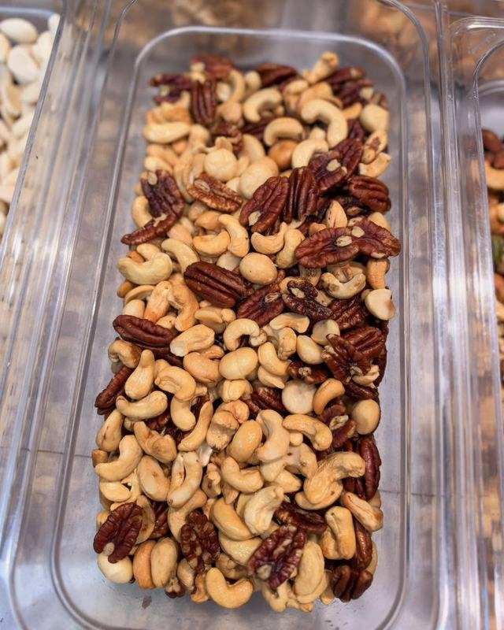
Notenmix
Pecannoten, cashewnoten en macadamia's. Ook verkrijgbaar zonder zout.
Ook ongezouten
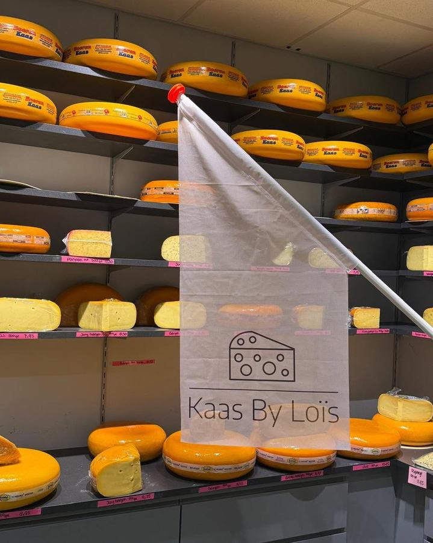
Kaas, noten en delicatessen. En regelmatig iets nieuws om te proeven.
Hollandse kaas snijden we vers van het mes, van jong tot oud. Daarnaast hebben we een wisselende keuze aan kruidenkazen en kazen uit het buitenland.
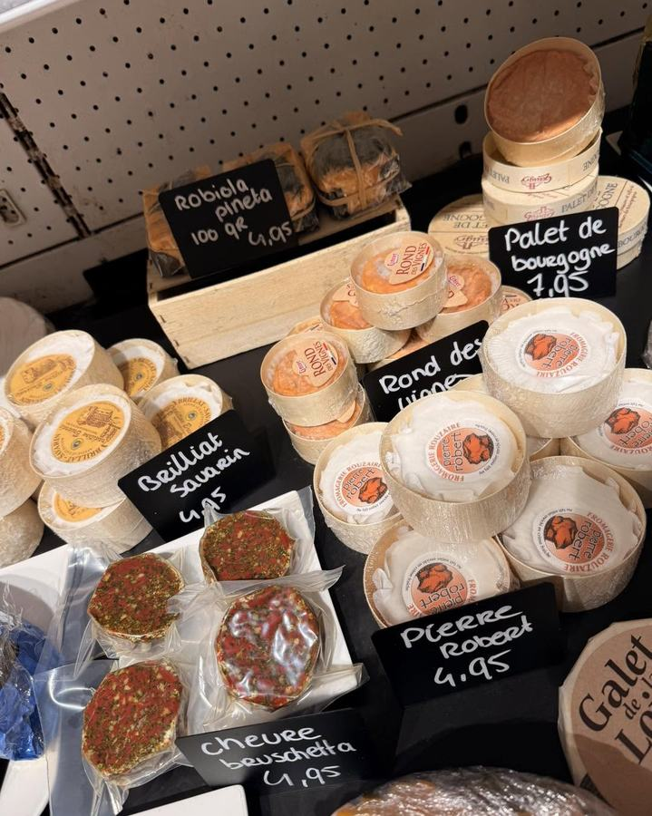
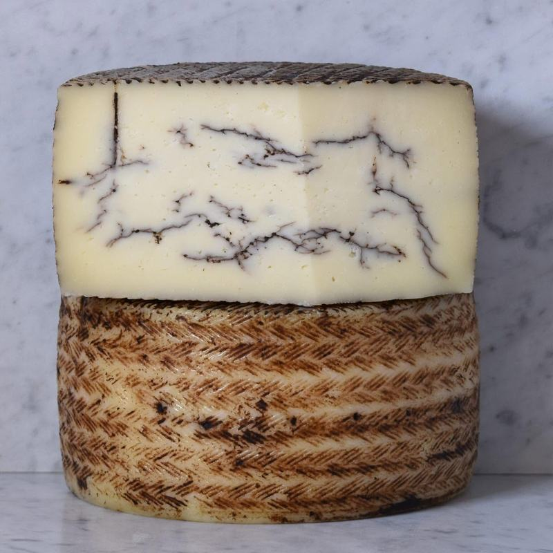
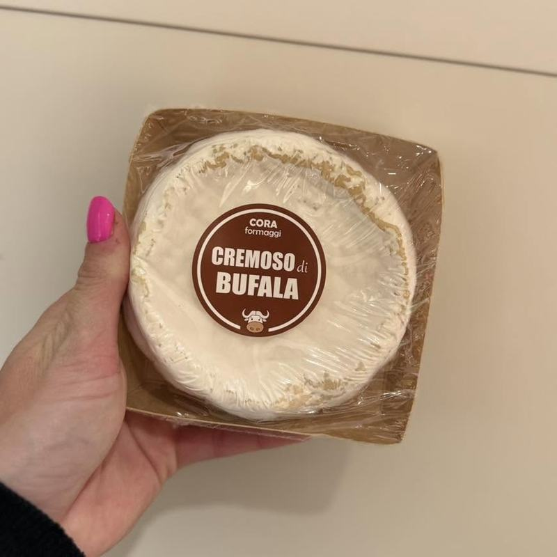
Voor bij de borrel, tussendoor of in een cadeaupakket.

Pecannoten, cashewnoten en macadamia's. Ook verkrijgbaar zonder zout.
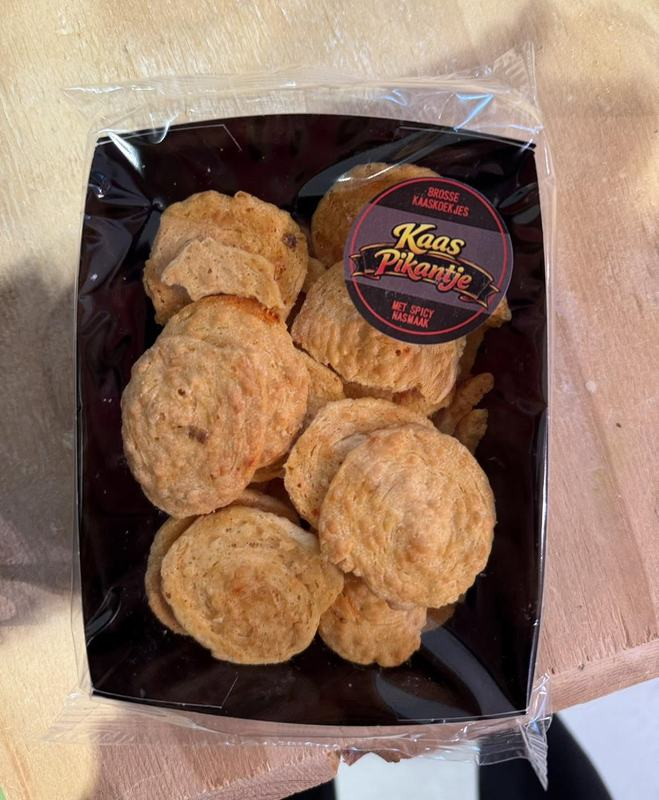
Kaas Pikantje: krokante kaasvlinders met een spicy nasmaak.
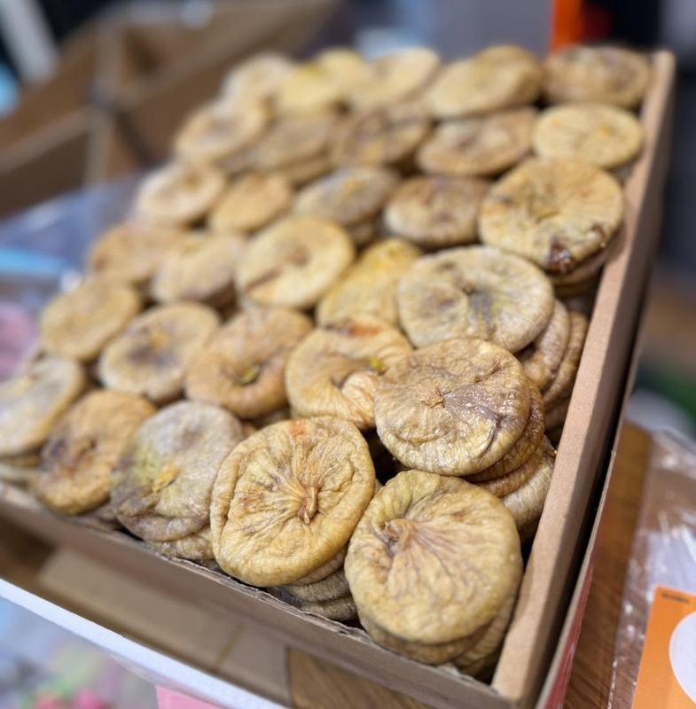
Overheerlijke gedroogde vijgen, lekker bij een stuk oude kaas.
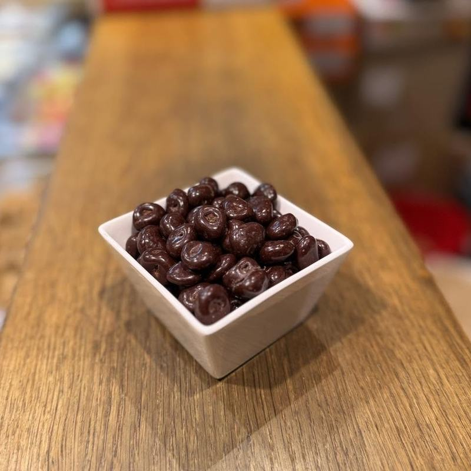
Sappige rozijnen in een laag pure chocolade.
Alles wat lekker is bij kaas, en nog wat boodschappen erbij.
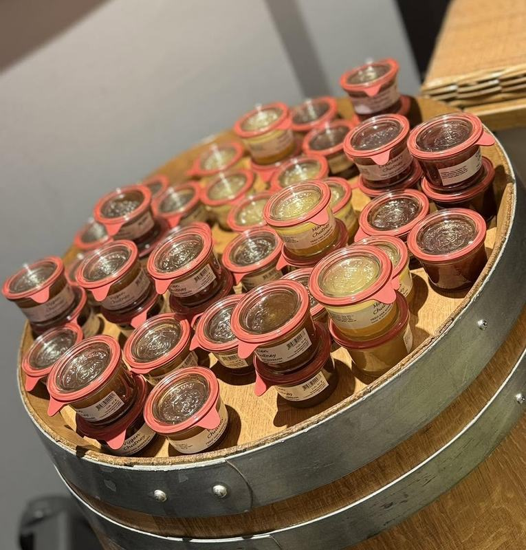
Vijgen, cranberry, uien en mango. Lekker op de kaasplank.
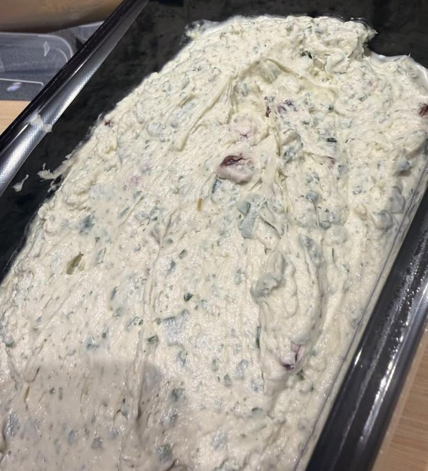
Zoals Kruidenkriebel en mosterd-dille, fris en vol smaak.
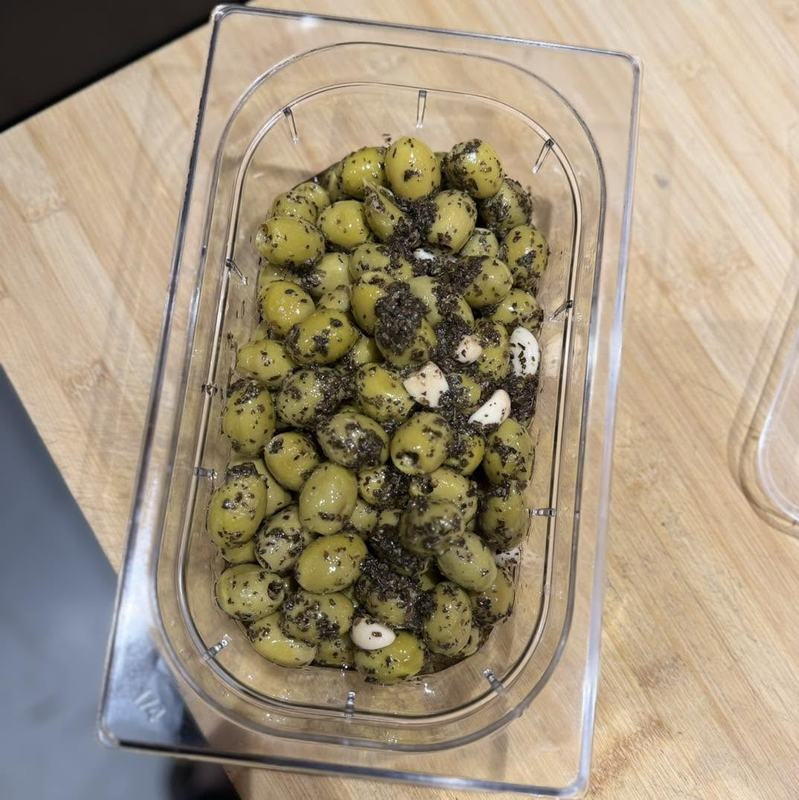
Jumbo olijven met basilicum en knoflook.
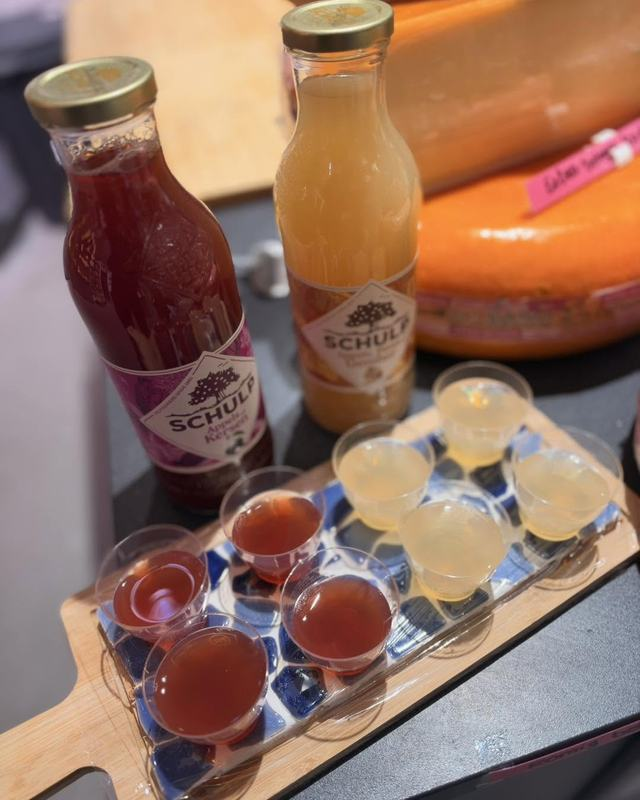
Puur fruit, zonder onnodige toevoegingen, in verschillende smaken.
Dagelijks vers bereid. Lekker op brood, bij de borrel of bij de lunch.
Sommige dingen liggen er maar even. Volg ons op Facebook of Instagram, dan weet je wanneer.
Aan de toonbank denken we met je mee.
Bijna alle kaas kunnen we vacuüm trekken. In de koelkast blijft die zo 2 tot 4 maanden goed.
We malen je kaas vers. Invriezen en eruit halen wat je nodig hebt.
Onze kazen zijn rond. Van een schuin stuk maken we mooie puntjes voor de borrelplank.
Welke kaas past bij je borrel of gerecht? We denken graag met je mee.
Wil je iets bestellen of heb je een vraag? Stuur gerust een berichtje of kom langs in de winkel.
Laat via WhatsApp weten wat je wilt en wanneer je het ophaalt. Voor een kerstpakket of borrelplank denken we graag met je mee.
Woensdag t/m vrijdag zijn we tussen 12.00 en 12.30 even dicht. Rond feestdagen en vakanties kunnen de tijden afwijken.